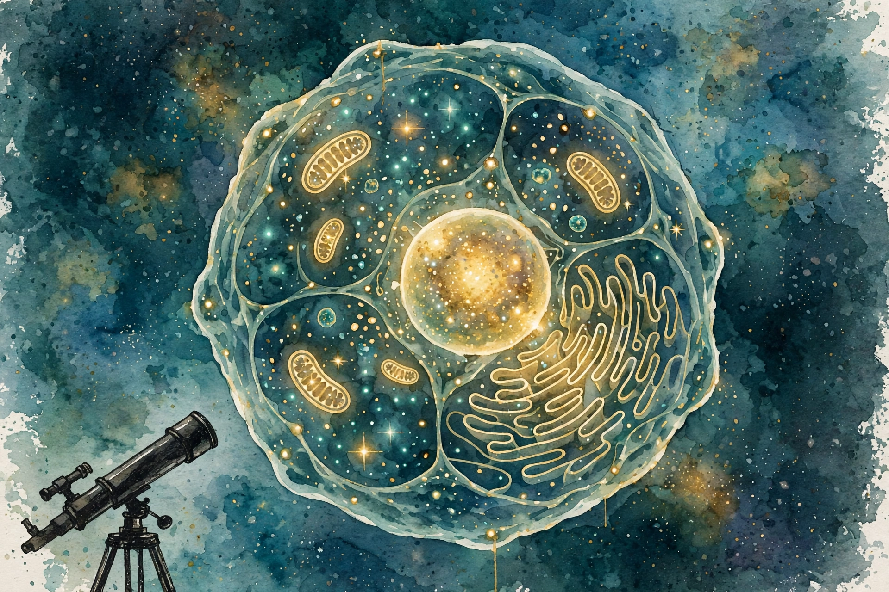
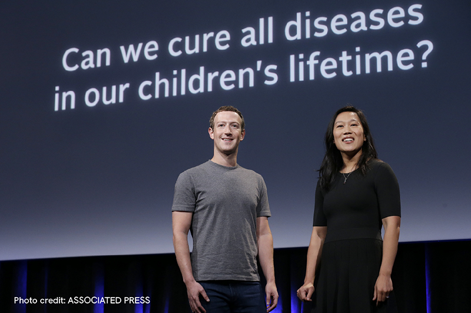

Huberman Lab · Episode 5 · Companion
Curing Disease with AI
Mark Zuckerberg and Priscilla Chan explain the Chan Zuckerberg Initiative: cure, prevent, or manage all disease by the end of the century, starting with the cell. Plus the cleanest definition of machine learning on the track and Meta's road from Ray-Ban glasses to holograms. This companion follows the conversation in order.

Illustration. The telescope for the cell: AI plus imaging as the lens for 37 trillion cells. Made for this page. AI-generated watercolor in a New Yorker style, made for this page. It carries no words or labels.
Watch. The official episode video on youtube-nocookie, the only external dependency on this page. Use the chapter menu above to jump to any section of this companion as you listen.
The Wisdom Index: every nugget in this companion
Opening section
The mission

Photograph. Mark Zuckerberg and Priscilla Chan at the CZ Biohub launch. Real photograph by the Associated Press, via CZ Biohub. Used with source attribution. This is not an AI-generated image.
SOURCE The Chan Zuckerberg Initiative launched in 2015. Its stated goal: cure, prevent, or manage all disease by the end of the century. Not one disease. All of them.
cure prevent or manage all Disease by the end of the century
Priscilla Chan, opening section of the episode
SOURCE The strategy has three parts: fund great scientists, build tools, currently software tools, that make science faster and easier, and do science directly through institutes like the Biohubs. The first Biohub launched in San Francisco as a collaboration between Stanford, UC Berkeley, and UCSF. Later Biohubs launched in Chicago and New York. The model: bring teams together for grand challenges that no single lab or discipline could take on.
SOURCE The theory of change: most large-scale discoveries are preceded by a new tool or a new way of seeing. The telescope came before modern astronomy. The microscope came before modern biology. CZI's bet is that AI plus new imaging is the telescope for the cell.
Nugget 1 · Strategy
The tool comes first
What happened. CZI bets that discoveries follow tools the way astronomy followed the telescope. So it builds the lens for the cell instead of picking a disease to cure.
Why it matters. Tool-first beats target-first when the problem is too big to aim at directly. Nobody can aim at all disease. Everybody can use a better microscope.
The principle. When a problem defeats direct attack, build the instrument that makes the problem visible. The discoveries follow the tool.
Nugget 2 · Honesty
Infrastructure bet, not hero bet
What happened. CZI does not claim it will cure all diseases itself. The goal is to give the global scientific community the tools that accelerate the pace of science.
Why it matters. The distinction changes how you judge the bet. An infrastructure bet wins when everyone else moves faster, not when the builder takes the prize.
The principle. State whether you play hero or infrastructure. Heroes get judged on cures. Infrastructure gets judged on acceleration.
Early section
The cell is the center
SOURCE Chan's framing: the cell sits at the center of all discussion of disease. The body is made of cells. The estimate given in the episode: about 37 trillion cells in the human body.
SOURCE The Human Genome Project taught us how mutations in DNA create susceptibility or directly cause disease. Huntington's disease follows from a DNA mutation. But between the mutation and the disease lies a vast middle: what actually happens inside cells. That middle is what CZI attacks. The open questions: what does a healthy cell look like versus a sick cell, how many cell types exist, and what do cells do when challenged.
Why no human can map the cell by hand
37 trillion cells at one cell per second is about 1.17 million years. At one million cells per second, about 1.17 years. Both are worked arithmetic from the episode's number.
Source: episode transcript, cell section (about 37 trillion cells). The time figures are worked arithmetic. 37 trillion seconds is about 1.17 million years. At one million cells per second, about 1.17 years.
Nugget 3 · Scale
1.17 million years
What happened. The episode's own arithmetic: mapping 37 trillion cells one per second takes over a million years of nonstop work. No lab, no career, no lifetime covers it.
Why it matters. The number kills the more-scientists strategy. The only viable move is tools that process millions of cells per second, which is why the bet is on AI, not headcount.
The principle. When the arithmetic says a million years, stop adding people. Change the instrument.
Early middle section
Cell by Gene: the worked tool
SOURCE CZI built a tool called Cell by Gene. How it works: you input a gene mutation you care about, the tool returns a heat map across cell types showing which cell types express that gene, and you read the map and form hypotheses.
SOURCE The episode's worked example: you know gene X relates to heart disease. The heat map shows it also spikes in the pancreas. That raises two questions a human might never ask: why is a heart gene active in the pancreas, and what happens to the pancreas when the gene mutates? For drug development, the same map warns of side effects: a drug targeting the heart that also hits the pancreas needs that flagged before clinical trials.
SOURCE This is the episode's concrete answer to what AI does for science. It does not replace the scientist. It makes the connection no human would have made, and the human does the science from there.
Nugget 4 · Tools
The tool makes the connection
What happened. A heat map shows a heart gene spiking in the pancreas. No human looks there. The map creates the hypothesis and the side-effect warning in one view.
Why it matters. This is the division of labor the episode defends: the machine surfaces the unasked question, the human does the science. Neither half works alone.
The principle. Judge an AI science tool by the questions it makes askable, not by the answers it gives. The unasked question is the product.
Middle section
What machine learning is
SOURCE Zuckerberg's definition in the episode: machine learning techniques are basically “pattern recognition” systems. Very deep statistical machines, very efficient at finding patterns. The striking claim: you do not need to teach the system the domain. Feed a language model English examples and Italian examples, and it can explain in Italian what it learned in English. Nobody taught it translation as a subject. The crossover falls out of pattern recognition at scale.
SOURCE The AlphaFold proof: DeepMind's protein-folding work uses basically the same model architecture as language models. Instead of text, it was fed protein data. Given a protein state, it outputs how the protein folds. Same architecture, different data, completely different domain. That is the power and the limit of the paradigm in one example.
Same architecture, two domains
The episode's proof that the paradigm is pattern recognition, not domain understanding.
Source: episode transcript, machine learning section. The architecture equivalence and the protein-data training are the episode's claims.
SOURCE Zuckerberg's honest limit: as an industry, we do not know the natural limits of this yet. That is what makes the current state exciting. The paradigm solves problems that were not solvable before, and nobody knows where it stops.
Nugget 5 · Definition
Same machine, different patterns
What happened. One architecture folds proteins and writes sentences. The only change is the training data. The machine never learned biology or language as subjects. It learned patterns.
Why it matters. This reframes every ML result: the question is never what the system understands. The question is what patterns it was fed.
The principle. When you evaluate an ML system, list its training patterns first. Its capabilities cannot exceed its patterns by much.
Nugget 6 · Limits
The honest limit: unknown
What happened. Zuckerberg states plainly that the industry does not know the natural limits of the pattern-recognition paradigm. He does not fill the gap with a guess.
Why it matters. An unknown limit is information. It tells you the field is still in the exploration phase, where the right move is experiments, not manifestos.
The principle. Say when a limit is unknown. Unknown is a finding, and it beats a confident invented boundary.
Middle late section
Where pattern recognition hits its limit
SOURCE The episode gives the failure case, and it is important. Mice: science has basically cured every disease in mice. Mice are the model organism. But mice are not humans, and the research often does not translate one to one.
SOURCE The deeper limit: pattern recognition needs abundant patterns. Where patterns are scarce, the paradigm strains. The episode's rare-disease numbers: over 7,000 rare diseases exist. Collectively they affect many people. Each one is a window into how normal biology works, because a mutation that breaks one specific thing reveals what that thing does when it works.
SOURCE The translation rule from the episode: CZI works up to the target-discovery stage. Then biotech companies and startups take the targets into translation and drug development. CZI knows its limitations and stays in its lane: tools and basic science, not therapeutics. The small exception is the rare-disease portfolio, where CZI funds patient advocates to build registries and partner with researchers and drug developers.
Nugget 7 · Translation
A mouse result is not a human result
What happened. Science cures diseases in mice routinely. The cures often fail in humans. The episode treats the gap as the central fact of translational medicine, not as a footnote.
Why it matters. Every mouse breakthrough arrives wrapped in human hope. The episode's rule keeps the two separate: routine in mice, unsolved in humans.
The principle. Never let a model-organism result stand in for the human result. Ask what the translation step costs before you celebrate.
Nugget 8 · Focus
Stay in your lane
What happened. CZI stops at target discovery and hands translation to biotech companies. It names its limitation and designs around it, with one deliberate exception for rare diseases.
Why it matters. Knowing where you stop is what makes the part you do excellent. The handoff is part of the strategy, not an admission of failure.
The principle. Define your lane by what you will not do. Then build the handoff to whoever does the rest.
Closing section
The future of computing: glasses
SOURCE Zuckerberg defines the terms. Augmented reality: you see the real world, with holograms placed in it, the future smart glasses version. Virtual reality: the headset experience, fully immersive. Mixed reality: the umbrella term for the combined experience.
SOURCE His thought experiment: walk around and ask what actually needs to be physical. The chair does, because you sit on it. The art on the wall does not. The workstation does not. Any screen could be a hologram. In the limit, you walk into a room with as many holograms as physical objects.
Illustration. The glasses ladder: every screen becomes a hologram. AI-generated watercolor in a New Yorker style, made for this page.
SOURCE Two tracks, stated as a product ladder. Now: Ray-Ban Meta glasses. A sensor on the front captures photos and video without taking out your phone. Speaker and microphone for music and calls. Each generation improves: the camera got about twice as good, the audio crisper. The big change is AI running on the glasses, proxied through the phone, powered by LLM advances. Later: full AR glasses with holographic displays. The engineering problem: miniaturizing a supercomputer into stylish, normal-looking glasses. Internal dev kits exist. It will be more expensive at first.
SOURCE The analogy Zuckerberg gives: AR glasses are to the phone as the phone is to the workstation. You wear glasses all day for frequent light interactions. You sit at the headset or workstation for intense tasks. A surgeon should operate through the headset, not the glasses.
SOURCE The privacy design: a bright pulsing white light whenever the camera sensor is active. More visible than a phone camera, which shows nothing. The episode acknowledges the consent problem directly: glasses blend into daily life in a way phones do not, and locker rooms are the sharp example.
Nugget 9 · Hardware
The glasses ladder
What happened. Meta ships camera glasses now and builds holographic AR for later. The ladder runs on one engineering problem: miniaturizing a supercomputer into normal-looking frames.
Why it matters. The product sequence reveals the constraint. What ships today is what the miniaturization allows today. The roadmap is a hardware story, not a software story.
The principle. Read any hardware roadmap as a list of unsolved miniaturization problems. The dates are guesses. The problems are real.
Nugget 10 · Privacy
A design answer, not a solution
What happened. The camera glasses carry a bright pulsing white light when recording, more visible than a phone. The episode admits the consent problem stays real: glasses blend into daily life in a way phones do not.
Why it matters. The light is honest design, and the episode refuses to call it a solution. Naming the remainder is what keeps the design honest.
The principle. Ship the mitigation and name what it does not fix. A partial answer labeled partial beats a partial answer sold as complete.
Takeaways
- CZI's goal: cure, prevent, or manage all disease by 2100. The method is infrastructure, not heroics: fund scientists, build tools, do science directly.
- The tool comes first. The telescope came before modern astronomy. AI plus imaging is the telescope for the cell.
- Machine learning is pattern recognition. AlphaFold proves it: the same model architecture as language models, fed protein data instead of text, solves protein folding.
- Pattern recognition needs abundant patterns. Mice are cured routinely and it does not transfer one to one. Over 7,000 rare diseases strain the paradigm.
- Glasses are the phone, worn all day. The headset is the workstation, for intense tasks. The pulsing camera light is a design answer to consent, not a complete solution.